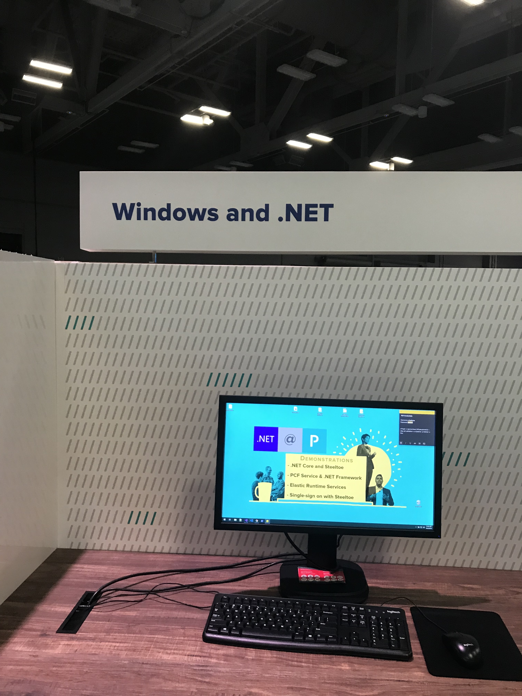

Downtown Austin
Held at the Austin convention center
Bummer that the Austin Metro downtown station was closed for construction
Swag/Charity


Sponsors
VMWare


More than a dozen others
And
Wait for it
Waiting ...
Are you ready?

Learning Stations


App Modernization

Database and Machine Learning

Pivotal Platform and Kubernetes

Spring Technology

Windows and .NET
Countries of people I met
- Canada
- Ireland
- Ukraine
- Denmark
- Germany
- Korea
- Japan
VMWare Acquiring Pivotal
blog postThemes
Pivotal DevOps (that's how they make money)
Spring Framework/Boot
Reactive programming
Event Driven (RabbitMQ, Kafka, Redis)
Kotlin
Testing
DevOps
- Pivotal Platform (PKS)
- Kubernetes
- Spinnaker CI/CD
- Monitoring Micrometer
Reactive
- Spring React
- Dos and Don'ts
- RSocket Messaging
- R2DBC
Spring
- Spring React
- Spring Boot
- Spring Data JPA/JDBC
- Security (OAuth)
Testing
- Spring
- Junit 5
- Mutation
One offs
- Resilence4J - circuit breaker
- HATEOAS
- Contract-Driven Development
Annoying screen
SpringOne Conference YouTube channel
See https://www.youtube.com/playlist?list=PLAdzTan_eSPRlQ8t4TU5c-AB4SHV939M6
Netflix
See Taylor Wicksell and Tom Gianos at SpringOne Platform 2019
Netflix uses SpringBoot
Spring Framework 5.2 Core
- Core APIs
- Performance
- Reactive
Core APIs
Version 5.x runs on Java 8 ("touch almost every file")
Kotlin force nullability declarations for APIs
Not nullable by default so added @Nullable
Performance
Mostly about increasing start up time
React MVC
React MVC
Switch the servlet request to the servlet container's async request
mode (servlet 2.1 feature).
Not as effecient as running in netty using the React stack.
Examples: server sent events; long running endpoints
Hence can mix and match react and sequential programming
React R2DBC
@Transactional
React R2DBC
<dependency> <groupId>org.springframework.boot</groupId> <artifactId> spring-boot-starter-data-cassandra-reactive </artifactId> <version>2.0.0.M3</version> </dependency>
RSocket
React R2DBC
RSocket just like REST and R2DBC, can use with Spring MVC
Spring Data JPA
See the YouTube recording
Personally I hate JPA
Spring Data JDBC
See the YouTube recording
TODO
Write Less Code with Kotlin
See the YouTube recording
I am very intrigued
Runs on JVM
FF4J: Feature Toggling
See the YouTube recording
Open source feature toggles
WebAssembly
See the YouTube recording
Niche solution for intensive processing in browser instead of on server
Building Better Monoliths
See the YouTube recording
Use a monolith but enforce modules by packages
Would avoid Linkerd problems :)
Accessibility (I11y)
See the YouTube recording
Screen readers (e.g. JAWS) do not know when JavaScript changes DOM. Should move focus to top of page and change title.
JUnit 5
See the YouTube recording
Just a ton of stuff
Nonstop for 70 minutes. This can be a presentation all by itself.
Mutation Testing: Case Studies
See the YouTube recording
Test your tests
Testing Spring Boot Applications
See the YouTube recording
MockRestServiceServer
RestTemplate restTemplate = new RestTemplate()
MockRestServiceServer server = MockRestServiceServer.bindTo(restTemplate).build();
server.expect(manyTimes(), requestTo("/hotels/42")).andExpect(method(HttpMethod.GET))
.andRespond(withSuccess("{ \"id\" : \"42\", \"name\" : \"Holiday Inn\"}",
MediaType.APPLICATION_JSON));
Hotel hotel = restTemplate.getForObject("/hotels/{id}", Hotel.class, 42);
server.verify();
Testcontainers
testcontainers.orgTestcontainers is a Java library that supports JUnit tests, providing lightweight, throwaway instances of common databases, Selenium web browsers, or anything else that can run in a Docker container.
New Java Features
See the YouTube recording
Azul has spoken at AJUG. Pretty much the same presentation.
There was a session "Better than BASH - Scripting & Automation with Kotlin"
See the YouTube recording
Kotlin can run natively (e.g. linux). See Kotlin/Native for Native